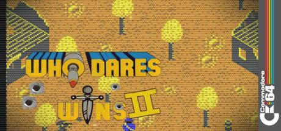

Who Dares Wins II
1985
•
C64
•
Alligata Software
Overview
Game Summary
Who Dares Wins II on Commodore — screenshots, manual, downloads and video.
Explore
More Details
View the full interactive game page
Browse all games
Share this game
Email
WhatsApp
X
Facebook
Copy link